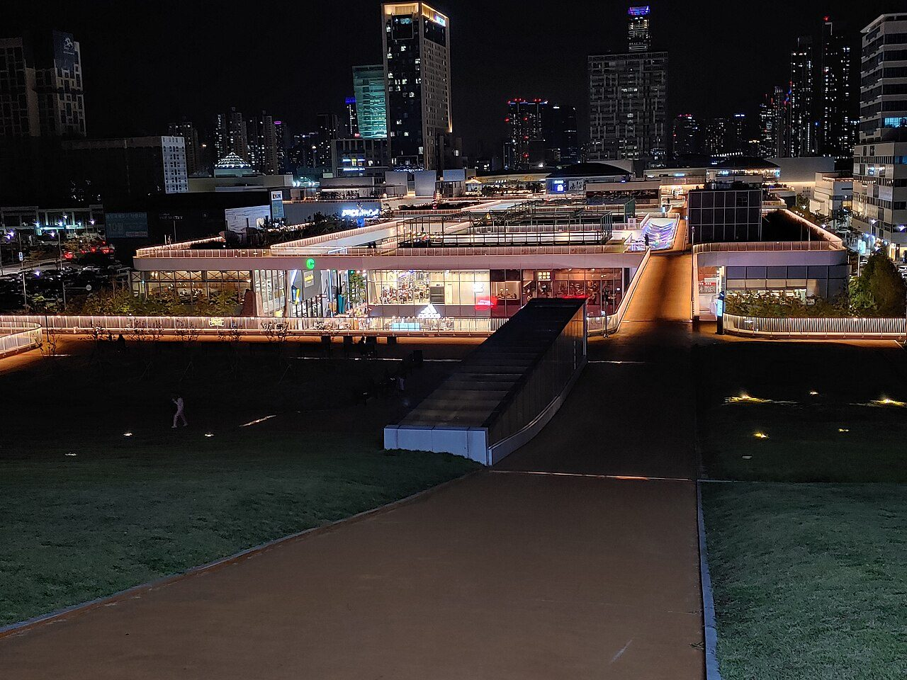
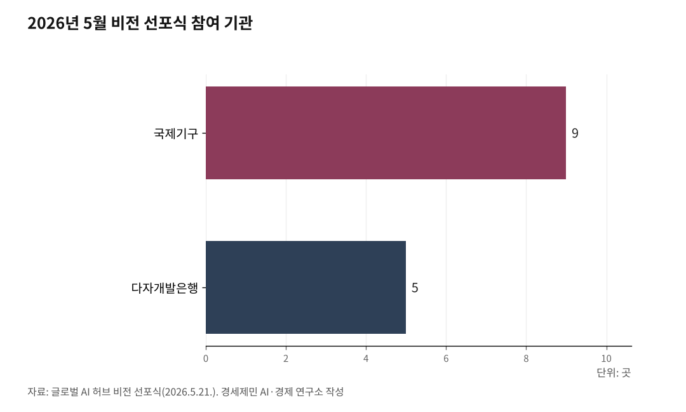

짓는 도시 아닌 운영하는 도시… 인천의 UN AI 허브 승부수
인천·광주·경북·부산 4파전… 입지 선정 임박
인천의 무기는 국제기구 12년 운영 경험과 송도 집적
강점 살려 기회 잡는 SO 전략… 융합 플랫폼·국제기구 클러스터
AI경제저널=김갑봉 기자 | UN 글로벌 AI 허브 입지 선정이 다가온다. 인천·광주·경북·부산이 뛴다. 인천이 내세우는 강점과 전략을 사실로 짚는다.

4파전으로 좁혀진 경쟁
UN AI 허브는 정부가 직접 추진하는 국가사업이다. 국무총리를 위원장으로 한 정부 유치위원회가 가동되고, 차지호 더불어민주당 의원이 간사를 맡았다. 정부는 2026년 3월 17일 스위스 제네바에서 노동·이주·통신·보건·식량·개발을 맡는 6개 유엔 기구와 협력의향서를 맺었다(2026.3.17 기준).
판은 더 커졌다. 4월에는 구윤철 부총리가 미국 워싱턴에서 'K-AI 허브' 구상을 내놨다(2026.4 기준). 5월 21일 비전 선포식에는 9개 국제기구와 세계은행 등 5개 다자개발은행이 함께했다(2026.5.21 기준). 정부는 2026년 상반기 가동을 목표로 잡았고, 입지 선정은 연말이나 내년 초로 예상된다.
지자체 경쟁은 본격화됐다. 인천·광주·경북·부산이 앞서 뛰고, 경기·제주도 관심을 보인다(2026.6.30 기준). 도시마다 무기가 다르다. 인천은 국제기구 운영 경험, 광주는 공공·민주 거버넌스, 경북은 값싼 전기, 부산은 초연결 인프라를 내세운다.

경쟁 도시의 강점과 빈틈
광주는 2019년부터 'AI 중심도시 광주' 1단계를 진행해 국가AI데이터센터를 구축했다. 5·18에 뿌리를 둔 민주·인권 거버넌스를 명분으로 들고, 광주연구원이 유치 보고서를 냈다. 다만 2조5000억원 규모 국가AI컴퓨팅센터를 전남 해남에 내줬고, 전력과 부지에서 약점을 안았다.
이철우 지사가 이끄는 경북은 전력자립률 215.6%로 전국 1위인 값싼 전기를 앞세운다. 경주에 거버넌스 본부, 포항에 데이터 본부를 두는 투트랙이고, 포항에는 2조원 규모 글로벌 AI 데이터센터가 들어선다(경북연구원 제안). 다만 인구감소와 정주여건, 국제기구 운영 경험 부재가 과제다.
부산은 국제 해저광케이블 90% 집결과 높은 전력자립도를 든다. 에코델타시티를 거점으로 가덕도신공항·해운대·영도를 잇고, 동남권 연 6조5000억원 생산유발과 3만2000명 고용을 기대한다(부산연구원 2026.6 기준). 다만 국제기구가 없어 운영 경험이 없고, AI 인재 정주여건도 과제로 꼽힌다.
세 도시 모두 국제기구를 직접 운영해본 적이 없다. 인천과 갈리는 지점이다.
인천의 강점
인천은 국제기구를 12년간 직접 운영했다. 2012년 독일 본을 제치고 녹색기후기금(GCF)을 유치했고, 2013년 12월 송도 G타워에 사무국을 열었다(2013.12 기준). 특별법 제정, 본부협정 국회 비준, 행재정 협정까지 국제기구를 받는 3단계를 모두 거쳤다.
운영 실적도 쌓였다. GCF는 2024년 4월까지 누적 253건, 530억 달러를 승인했다(2024.4 기준). 이사회는 대부분 송도컨벤시아에서 열렸고, 면세·외교특권·비자 처리 같은 운영 체계가 12년간 돌아갔다. 인천시는 G타워 옆에 GCF 복합단지 C타워를 국비로 짓고 있다.
송도에는 국제기구가 모여 있다. 국제학교와 외국인 정주 환경도 갖췄다. GCF와 유엔재난위험경감사무국(UNDRR)이 자리했고, 세계은행은 2025년 12월 글로벌 디지털 지식센터를 해외 첫 사례로 열었다(2025.12 기준).
이득도 검증됐다. GCF는 인천에 연 539억원 생산유발과 660명 취업유발 등 직간접 1172억원 효과를 냈다(인천연구원 2024.9 기준). 국가사업이라 큰 비용은 국비가 대고, 인천 몫은 연 40억원으로 시 예산의 0.03%에 못 미친다(2026년 예산 기준).
인천의 SO 전략
인천 전략의 핵심은 강점을 키워 기회를 잡는 것이다. 첫째는 '운영하는 도시'다. 다른 도시가 시설을 짓겠다고 할 때, 인천은 법적 체계와 운영 인력을 이미 갖춰 곧바로 가동할 수 있다.
둘째는 융합 플랫폼이다. UN AI 허브가 다루는 노동·이주·통신·보건·식량·개발은 인천공항(이주), 인천항(식량·물류), 송도 바이오(보건), GCF(기후·개발) 현장과 맞닿는다. 인천만 댈 수 있는 실증 현장이다.
셋째는 국제기구 클러스터다. 세계은행 센터와 UN AI 허브를 묶고, 2025년 12월 문을 연 인하대 AI 데이터센터 같은 지역 기반을 잇는다(2025.12 기준). 국제기구가 송도로 모이는 흐름을 키우는 전략이다.
박찬대 시장은 'AI는 산업을 넘어 의료·기후위기 등 인류 문제를 푸는 도구'라고 했다. 그는 민선 9기 비전 'ABC+E'에서 송도 유치를 핵심 과제로 꼽았고(2026.6.21 기준), 6월 28일 정부·국제 인사와 만나 공감대를 넓혔다. GCF 12년 동안 한국인 고위직이 적었던 점은 숙제다. 의제를 짜는 자리를 함께 확보하는 일이 남는다. 인천의 승부처는 '이미 운영하는 도시'라는 자리다.
참고문헌
· 「글로벌 AI 허브 입지 선정 시동… 전국 지자체 유치 경쟁 본격화」, 전자신문, 2026.6.30., https://www.etnews.com
· 「「글로벌 AI 허브」 비전 선포식 개최」(9개 국제기구·5개 다자개발은행), 대한민국 정책브리핑, 2026.5.21., https://www.korea.kr
· 「UN AI 허브 유치를 공식 추진합니다」(3월 17일 제네바 6개 유엔기구 협력의향서), 대한민국 정책브리핑, 2026.3., https://www.korea.kr
· 「국가AI컴퓨팅센터 유치, 광주 왜 실패했나」(2조5000억원·해남 확정), 광주드림, 2025.10., https://www.gjdream.com
· 「경북연구원, 'UN AI 허브' 유치 공식 제안」(전력자립률 215.6%·경주·포항 투트랙), BBS 불교방송, 2026.4., https://news.bbsi.co.kr
· 「부산연구원 "UN 인공지능 허브 유치 최적지는 부산"」(해저광케이블 90%·동남권 6.5조원·3만2000명), 뉴시스, 2026.6.8., https://www.newsis.com
· 「세계은행 글로벌 지식센터 한국에 개소」, 대한민국 정책브리핑, 2025.12., https://www.korea.kr
· 「GCF Annual Progress Report 2024」(누적 253건·530억 달러 승인), 녹색기후기금, 2024., https://www.greenclimate.fund
· 「녹색기후기금(GCF)의 인천 지역경제 영향 분석」(생산유발 539억원·취업 660명·직간접 1172억원), 인천연구원, 2024.9., https://www.ii.re.kr
· 「녹색기후기금(GCF) 소개」(인천시 연 40억원·사무공간 지원), 인천광역시, https://www.incheon.go.kr/env/ENV010103
· 「인하대, AI 데이터센터 개소」, 파이낸셜뉴스, 2025.12.11., https://www.fnnews.com
· 「박찬대, 'UN AI 허브' 송도 유치 뛴다… 공감대」, 경기일보, 2026.6.28., https://www.kyeonggi.com
※ 이 칼럼은 AI 프로그램 클로드를 활용해 작성했습니다.
사진 출처
· [대표사진] dongil0324, "Triple street(night view) .jpg", 위키미디어 공용, CC0, https://commons.wikimedia.org/wiki/File:Triple_street(night_view)_.jpg
※ 이 기사는 인공지능을 활용해 작성했습니다.
관련기사
- UN AI 허브는 거대 데이터센터 아닌 'AI규범 UN기구'… 국제기구 클러스터 인천이 최적지
- UN AI 허브 4개 도시 SWOT… 승부는 국제기구 운영 경험
- UN AI 허브, 인천 제조업 25만에 '국제 노동기준' 연다
- 국제기구 도시 송도, UN AI 허브 최적지… 박찬대 앞장서
저작권자 © AI경제저널 무단전재 및 재배포, AI학습 및 활용 금지